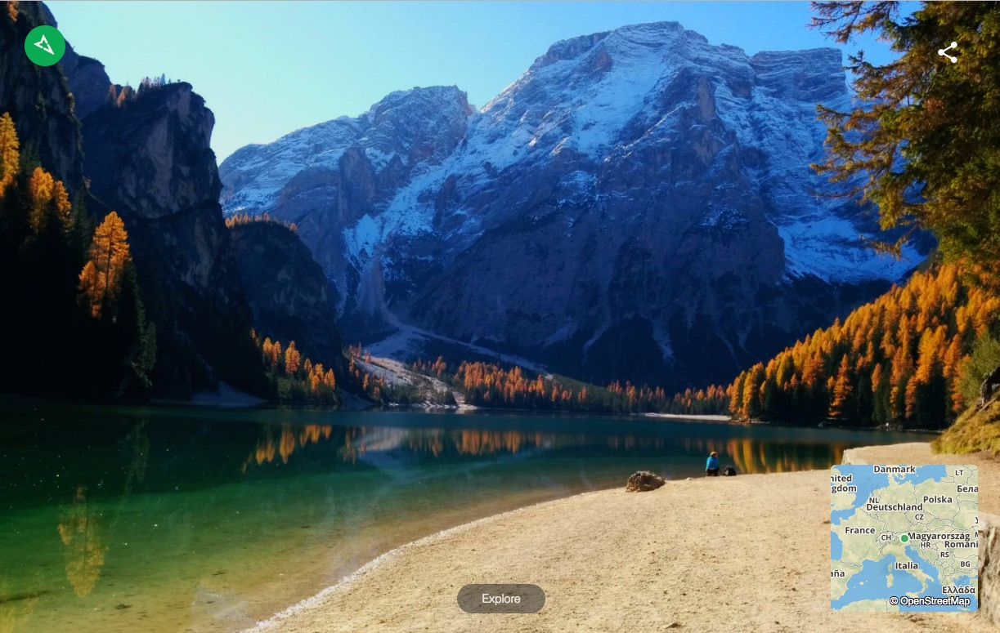

Mapillary Chrome extension
Mapillary is a street-level imagery platform powered by collaboration and computer vision. It's also the team I've been a part of for the past year.
One tiny project I made before joining Mapillary was a Chrome browser extension that showcases amazing images on Mapillary that were uploaded by users. You can find it at the Chrome web store.
It lets you see an awesome image every time you open a new tab and you can start exploring from there.
I've been updating it over the past year, adding fresh images and tweaking and simplifying it for a smoother experience. You can see the source code in the mapillary-chrome-extension repository and use it as a starting point for your new browser extension.
